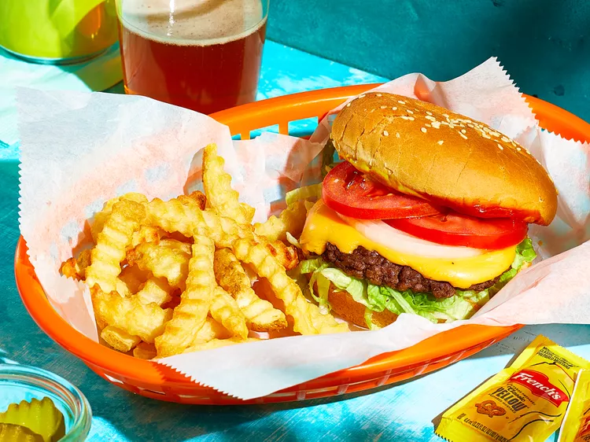

Smash Burgers

Recipe source: https://www.allrecipes.com/recipe/8489146/homemade-smash-burgers/
Description
A smash burger is a burger that’s made by smashing two thin beef patties together with cheese in the middle. The act of pressing the burgers together over heat creates a perfect sear on the outside, ensuring juicy and flavorful results every time.
Ingredients
- 4 hamburger buns
- 2 tablespoons butter, softened, or as needed
- 1 pound ground chuck beef (80% lean)
- 4 (6-inch) squares parchment paper
- salt to taste
- 4 slices American cheese
- burger toppings of choice
Steps
- Preheat an outdoor grill for high heat and lightly oil the grate. Set a cast iron flat-top griddle or large cast iron skillet onto the grill and preheat until smoking.
- Spread butter on the inside of the buns and toast on the flat-top until lightly browned. Set aside.
- Form meat into 8 loosely-packed balls, 2 ounces each. Do not pack the meat tightly, as this will prevent it from smashing properly. Place each ball on the hot flat-top, cover with a piece of parchment (to prevent sticking to the spatula; re-use each parchment square on a second patty) and immediately smash down to a 1/4 inch thickness using 2 stiff, sturdy spatulas that are criss-crossed to get proper leverage as you press down. You may also use the bottom of small skillet. Sprinkle the meat with salt.